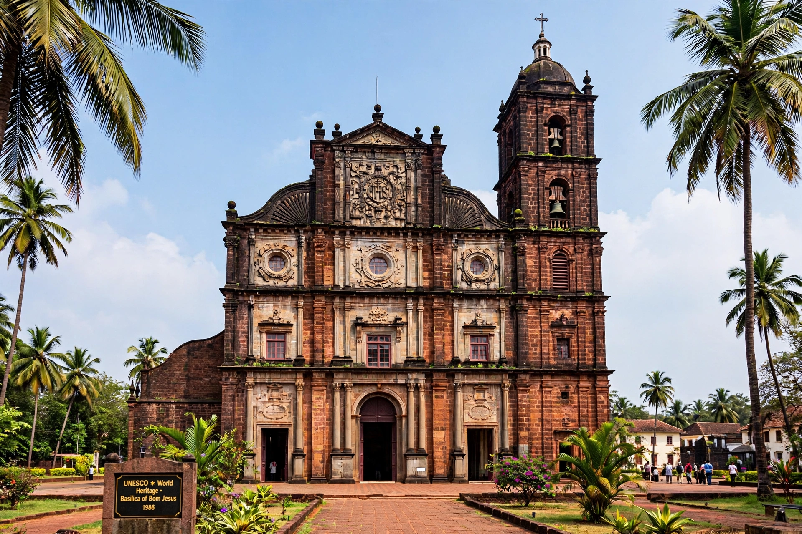

The Basilica of Bom Jesus is a Catholic church in Old Goa, India, dedicated to Jesus as an infant. It holds the mortal remains of St Francis Xavier and is a UNESCO World Heritage Site.

Construction began in 1594 and the church was consecrated in 1605. The body of Francis Xavier, who died in 1552, is kept in a silver casket in an elaborate mausoleum donated by Cosimo III of Tuscany, and is publicly exposed about every ten years.
Built of dark laterite, the church is a noted example of Baroque architecture in India, with a gilded main altar and Jesuit emblem IHS on its facade.